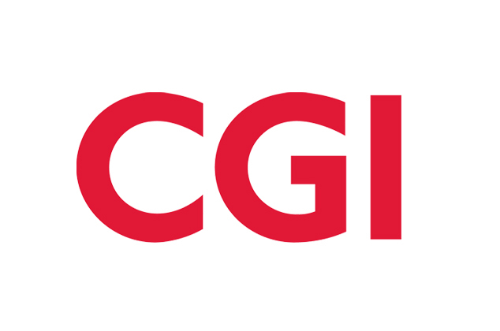
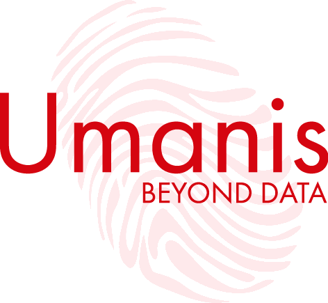
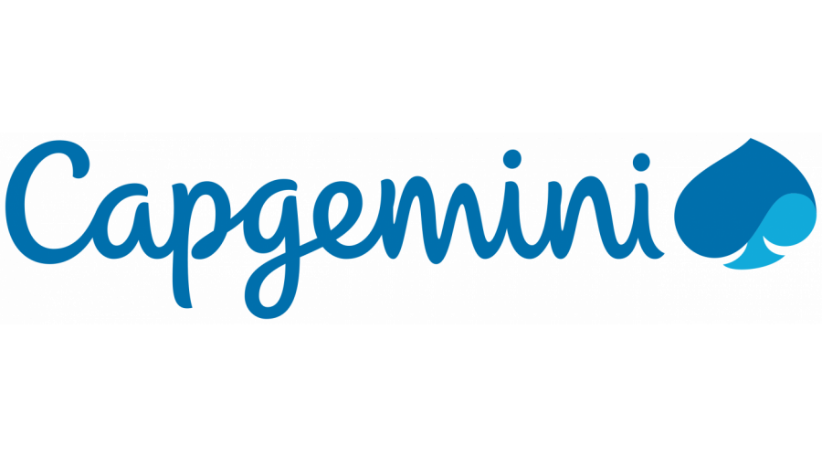
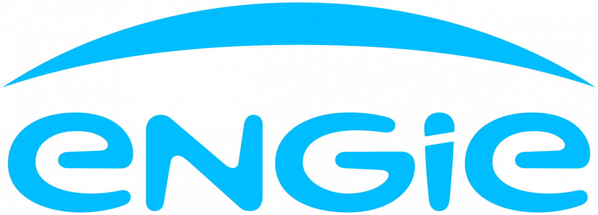

Architecture Data & Cloud
J’accompagne les entreprises dans la conception de plateformes data évolutives et gouvernées, dans des environnements cloud, lakehouse et distribués.
À propos
Je suis entrepreneur, directeur technique et architecte Data & Cloud, originaire de Fès, au Maroc, et installé à Paris. Mon travail porte sur la conception, l’évolution et l’exploitation de plateformes data modernes dans des environnements lakehouse, data mesh et distribués.
Je suis titulaire d’un diplôme d’ingénieur en génie logiciel et d’un Master 2 en systèmes d’information distribués. Mes recherches universitaires portent sur la virtualisation des capteurs et les approches de composition pour l’Internet des objets, un sujet qui a nourri mon intérêt pour les architectures complexes, distribuées et interopérables.
En tant que CTO, je fais le lien entre technologie, produit et stratégie d’entreprise : définition des feuilles de route techniques, décisions d’architecture, standards d’ingénierie, maîtrise des risques de livraison et accompagnement des équipes pour transformer des idées complexes en systèmes maintenables.
Aujourd’hui, j’aide les équipes à définir les solutions techniques, fonctionnelles et organisationnelles de leurs plateformes data, notamment dans des contextes cloud et multicloud. Mon périmètre couvre les principes d’architecture, la gouvernance, la qualité des données, l’observabilité, l’intégration de nouvelles équipes, les revues d’architecture, l’optimisation des coûts et des performances, ainsi que la coordination des livraisons en mode agile.
Au-delà du conseil et de l’architecture, j’écris et relis des livres et articles techniques, principalement consacrés à la technologie, aux données et à l’architecture logicielle. Je développe également des projets entrepreneuriaux et investis dans le logiciel, l’immobilier et les marchés financiers, tout en cultivant un intérêt personnel pour l’économie, les sciences, la philosophie et les voyages.
Expertise
Les domaines dans lesquels j’aide les équipes à prendre leurs décisions d’architecture, structurer leurs plateformes et livrer des produits data fiables.
Un aperçu ciblé des compétences que je mets au service de la stratégie, de l’architecture et de la réalisation des plateformes data.
Lakehouse, data mesh, gouvernance, sécurité et modèles opérationnels.
Choix d’architecture dans des environnements AWS, Azure, sur site et multicloud.
Traitements par lots et en flux, stockage et architectures distribuées résilientes.
Automatisation, CI/CD, infrastructure as code, observabilité et fiabilité des plateformes.
Ingestion, modélisation, transformation, contrôles de qualité et couches de consommation.
Stratégie technologique, feuilles de route, gouvernance de l’architecture, accompagnement des équipes et cohérence des livraisons.
2017 - Aujourd’hui
Direction de l’entreprise et pilotage des offres de conseil et de formation pour des clients tels qu’Engie, Decathlon, AXA, Société Générale, La Poste, BNP et EDF.
2022 - 2027
Conception de l’architecture et de la feuille de route de la plateforme data, validation des architectures de solution et accompagnement des équipes pendant la mise en œuvre.
2018 - 2022
Conception de la plateforme data, réalisation des fonctionnalités centrales et de l’outillage transverse, accompagnement à l’intégration et formation des équipes.
2017 - 2018
Administration des clusters Cloudera d’AXA, conception de solutions DevOps et d’automatisation, et développement de fonctionnalités de plateforme et d’infrastructure.
2016 -
Sujet de thèse : virtualisation de l’Internet des objets pour la composition de systèmes cyberphysiques mobiles. Pour en savoir plus, consulter ce poster.
2010 - 2011
Spécialisation en systèmes d’information distribués et management.
2006 - 2010
Spécialisation en génie logiciel.
2000 - 2045
Certifications obtenues en AWS, Hadoop, science des données, MongoDB, Cassandra, architecture, Scala, Java et Spring.
- Conception et architecture de plateformes data : Conseil et conception de plateformes data, lakehouses, datalakes et solutions de modern data stack. Cela couvre l’organisation, l’architecture, la modélisation, la gouvernance, la sécurité, la supervision et l’observabilité des données. Définition et maintien de la stratégie d’architecture informatique et de la vision d’entreprise, en évaluant continuellement les évolutions technologiques et les besoins métier.
- Intégration et haute disponibilité : Conception et intégration des systèmes existants, notamment décisionnels, analytiques et de science des données, avec les plateformes big data. Prise en compte des plans de reprise et de continuité d’activité, et conception de solutions hautement disponibles, réactives, temps réel, sécurisées et gouvernées pour préserver l’intégrité et la continuité du système.
- Conception des couches de données et ingénierie : Conception des couches et zones de stockage des plateformes data, ainsi que des fonctions d’ingestion, d’échange, de journalisation et d’archivage, de modélisation et d’exposition. Spécialisation dans les architectures Big Data et NoSQL distribuées, parallèles et évolutives, avec développement et conseil en architecture. Ingénierie des données en Java, Scala et Python avec Airflow, Spark, DBT, AWS (EMR, Glue, Athena, Lambda) et Databricks.
- Automatisation, DevOps et industrialisation : Pilotage de l’industrialisation et de l’automatisation des infrastructures et des projets à l’aide des pratiques DevOps, de l’infrastructure as code et des stratégies MLOps. Mise en place de chaînes d’ingénierie complètes et de pipelines CI/CD et IaC efficaces pour des cycles de déploiement rapides et fiables.
- Besoins, supervision et observabilité : Recueil des besoins métier et définition de solutions fonctionnelles et techniques. Mise en place de dispositifs de supervision, d’audit et d’observabilité des données pour assurer la fiabilité, la sécurité et la gouvernance du système, et fournir des indicateurs exploitables.
- Rédaction technique et présentations : Participation aux activités d’avant-vente et rédaction de spécifications techniques détaillées. Interventions en conférence et formations, avec des présentations rendant les sujets complexes accessibles aux équipes techniques comme aux directions.
- Accompagnement des équipes : Accompagnement dans la mise en place et l’intégration de leurs cas d’usage.
- Leadership et planification : Accompagnement, pilotage, estimation, planification, organisation et suivi des projets.
- Coordination des équipes : Animation des réunions, mobilisation des équipes et facilitation des relations au sein des équipes et entre elles.
- Communication : Communication sur les objectifs et la vision, et rédaction de rapports pour la direction.
- Gestion des livraisons et du backlog : Préparation des versions et des itérations, mise à jour des user stories et du backlog avec le Product Owner.
- Découpage produit : Décomposition du produit en cas d’usage pour préparer les livraisons, puis en tâches pour préparer les itérations.
- Gestion des ressources : Établissement de la disponibilité des ressources et des tableaux de capacité de production.
- Indicateurs : Production d’indicateurs de progression, de vélocité des équipes, de suivi des tâches, de qualité du code et de périmètre.
- Gestion des risques : Identification et gestion des risques.
- Plateformes : AWS, Azure, Databricks, Dataiku, Cloudera, Confluent, Aiven, etc.
- Stockage et formats : NoSQL : Cassandra, MongoDB, DynamoDB, CosmosDB, HBase, Redis, Postgres, RDS. Fichiers et stockage objet : HDFS, S3, ADLS2, GCS. Formats : DeltaLake, Iceberg, Parquet, YAML, AVRO, CSV, XML, JSON, etc.
- Traitement et streaming : Kafka, Kinesis, EventHub, Spark, Hadoop, AWS Glue, EMR, DMS, Lambda, EKS, DBT, Talend, etc.
- Consommation et exposition : Athena, Impala, Trino/Presto, GraphQL/REST, PowerBI, Tableau, QuickSight, SageMaker.
- Automatisation et orchestration : Docker, Airflow, Ansible, CloudFormation, Azure DevOps, Jenkins, Terraform.
- Environnements : Sur site, cloud, multicloud et architectures hybrides.
- Langages : Python, Scala, Java, SQL, CQL, JS.
Voir toutes les recommandations sur LinkedIn
Traductions françaises ; les recommandations d’origine sont accessibles sur LinkedIn.

Mehdi est un professionnel de la data talentueux, fiable et doté de connaissances très approfondies. Ses conseils ont joué un rôle déterminant dans la construction et le maintien de notre plateforme big data chez AXA. Il est également très agréable de travailler avec lui.
Nous avons travaillé ensemble sur une conception de data platform AWS. Mehdi a démontré ses qualités techniques et pédagogiques, avec un vrai sens de l’écoute et une bonne humeur à toute épreuve.
Parmi toutes les solutions qu’offraient AWS, il a su concevoir et documenter une plateforme data répondant parfaitement aux besoins et enjeux de notre client, qui s’est montré dithyrambique sur sa prestation.

Je recommande Mehdi TAZI sans réserve.
Nous étions tous deux architectes Data seniors au sein de l’équipe Capgemini Invent qui a défini la World Data Platform de Decathlon — environ six pétaoctets sur AWS et Databricks — et nous avons ensuite coécrit The Definitive Guide to Data Integration (Packt, 2024).
Mehdi fait partie de ces rares architectes capables de concevoir une plateforme lakehouse et d’écrire eux-mêmes le Spark, le Scala, le Python ou le Java qui la fait fonctionner.
Sur la World Class Data Platform, cela signifiait définir l’architecture cible pour faire évoluer un socle AWS natif vers Databricks et Unity Catalog sans interrompre les livraisons, tout en intégrant dès la conception la gouvernance, la qualité des données, l’observabilité et le FinOps.
Dans le livre, c’est lui qui veillait à ancrer les chapitres dans les difficultés réelles à cette échelle : données tardives, dérive du catalogue, coûts et équipes n’ayant jamais utilisé la plateforme.
Il est précis, impliqué dans la réalisation et responsable tant de la décision technique que de ses conséquences organisationnelles. Je retravaillerais avec lui dès demain sur une grande plateforme data, une transformation Databricks / AWS ou toute mission où une conception fragile peut coûter des années.
Il est prêt pour des responsabilités de niveau Principal et CTO.

J’ai eu le plaisir de travailler aux côtés de Mehdi dans notre équipe Data Lake, où il occupait le rôle d’architecte de plateforme data. Mehdi se distingue par sa capacité à associer une conception technique approfondie à une mise en œuvre concrète, adaptée aux exigences de l’entreprise.
Nous avons travaillé ensemble sur la conception des fonctionnalités centrales de la plateforme, la définition des RACI opérationnels et l’établissement de règles robustes de qualité des données. Ce qui m’impressionne le plus chez Mehdi, c’est sa vision globale de l’architecture : il ne conçoit pas simplement des plateformes pour les besoins immédiats, mais y intègre la gouvernance, les cadres de qualité et la clarté des responsabilités nécessaires à leur évolution sur le long terme. Toute organisation data à la recherche d’un architecte capable de transformer des exigences complexes en systèmes structurés et performants aurait de la chance de l’avoir à ses côtés.
Au sein de l’équipe de surveillance des opérations de marché d’Engie Global Markets, nous avons lancé un nouveau projet big data comportant de nombreux défis. Mehdi nous a énormément aidés, tant sur le plan technique en tant qu’expert big data et architecte cloud, que sur le plan humain et dans la gestion du projet. Toujours à l’écoute du client, il sait coordonner les différentes équipes DevOps. Une vraie réussite.

Mehdi a participé à la conception et à la mise en œuvre de notre solution big data, dont j’étais responsable. Il nous a aidés à définir et à déployer rapidement une solution répondant efficacement à nos besoins. Architecte disposant de plusieurs expériences réussies de mise en production, il possède un profil rare sur les sujets big data, que je ne peux que recommander.